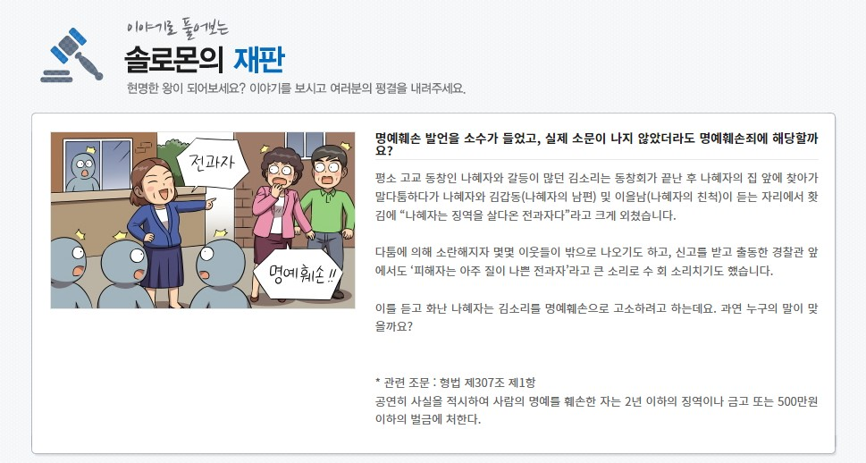

|
 |
 |
 |
 |
긍정 언어의 의미와 중요성을 이해하고 생활 속 실천하기(5분 32초) 상대방의 마음을 배려하는 긍정 언어 사용을 통해 상대방뿐만 아니라 자신의 품격 높이기 |
생활 속 우월적 지위 남용 사례 공익광고 ①(31초) ‘을이 존중받아야 갑도 존중받을 수 있다’는 메시지에 대해 함께 생각해 볼 수 있는 계기 마련, 상호 배려의 중요성 확인 |
생활 속 우월적 지위 남용 사례 공익광고 ②(40초) ‘을이 존중받아야 갑도 존중받을 수 있다’는 메시지에 대해 함께 생각해 볼 수 있는 계기 마련, 상호 배려의 중요성 확인 |
생활 속 우월적 지위 남용 사례 공익광고 ③(50초) ‘을이 존중받아야 갑도 존중받을 수 있다’는 메시지에 대해 함께 생각해 볼 수 있는 계기 마련, 상호 배려의 중요성 확인 |
이야기로 풀어보는 솔로몬의 재판 사실을 말한 것도 명예훼손이 될 수 있음을 재판 이야기를 통해 알아보고, 학교 및 생활 속에서 명예훼손이 발생할 수 있는 경우를 대비하며 올바른 언어 사용을 생활화 |